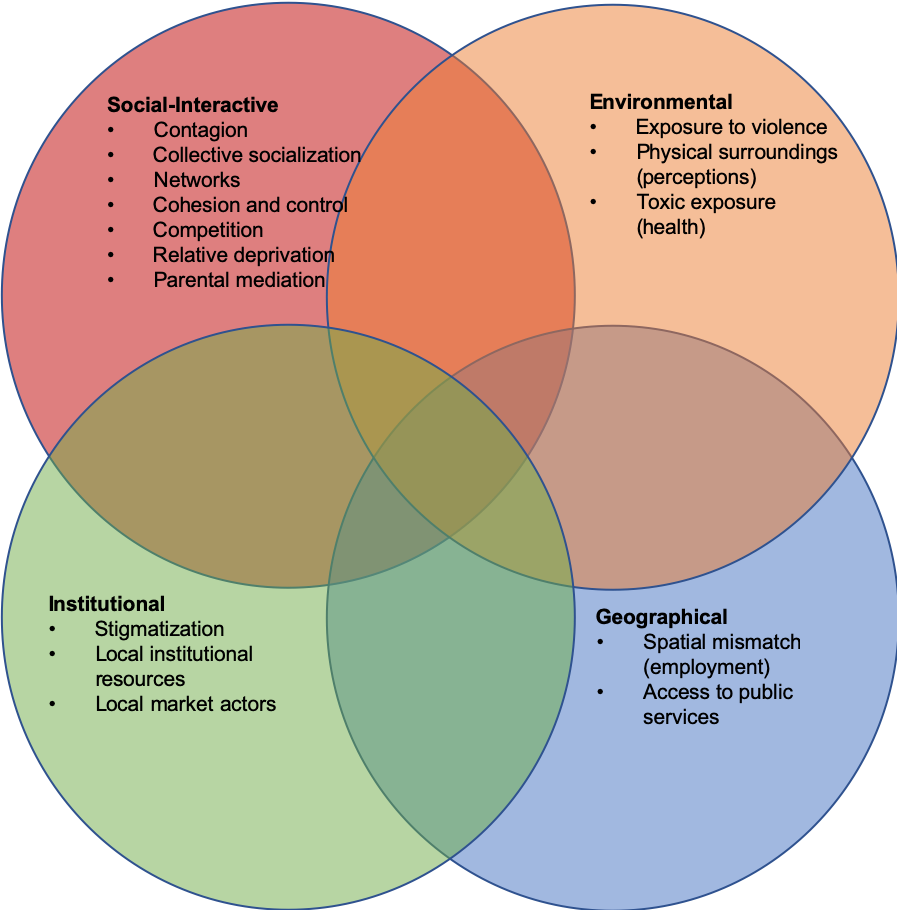

Crime Mapping and Spatial Analysis
Class 3: Space and Time in Criminology
John Palmer
What is an ecological analysis of crime?
- An analysis done on recycled paper
- An analysis that focuses on crimes that harm the environment
- An analysis that focuses on the interrelationship between individuals and their environment
What is an ecological analysis of crime?
Ecology: a branch of science concerned with the interrelationship of organisms and their environments. (From Merriam-Webster dictionary.)
- What does this mean in the context of criminology?
- Why should environment matter?
- What does the relevant environment include?
Individual or Environment?

Routine Activity Theory
- Motivated offenders
- Suitable Targets
- Capable Guardians
- Intimate Handlers
Routine Activities

Routine Activities

Social Disorganization Theory
- Socio-economic status
- Residential stability
- Diversity
- Family disintegration
- Urbanization
- Residential segregation
Neighborhood Effects (Galster 2012)

What is a neighborhood?
- Administrative area
- T-Community (Grannis 2005)
- Street segment (Weisburd et al. 2012)
Problems with neighborhood definitions
- Universality
- Social meaning vs. practical implementation
- Where do people spend time?
- Nesting
Scale Matters
Scale Matters
Scale Matters
Scale Matters
Surveys
- Questionnaires
- Interviews
- We are entering an unprecedented period in history in terms of our ability to learn about human behavior.
- - Onella, Jukka-Pekka. Social Networks and Collective Human Behavior. UN Global Pulse. 10 Nov. 2011.
- We live in a world where a huge amount of data is now collected by machines – and where the collectors of the data, the mobile phone companies or owners of satellites, are often not the users of the data they collect. And where data has most value when it is open, and can be re-used over and over again, or combined with other data through the magic of digital programing.
- - Claire Melamed, Why a World Data Forum? Dec. 12, 2016.
Data Revolution
- Data deluge
- Young data and data exhaust
- Developed and developing countries
Big Data
- Digitally generated
- Passively produced
- Automatically collected
- Geographically or temporally trackable
- Continuously analyzed
Data Exhaust
- passively collected transactional data from people’s use of digital services like mobile phones, purchases, web searches, etc., and/or operational metrics and other real-time data collected by UN agencies, NGOs and other aid organisations to monitor their projects and programmes (e.g. stock levels, school attendance); these digital services create networked sensors of human behaviour
Online Information
- web content such as news media and social media interactions (e.g. blogs, Twitter), news articles obituaries, e-commerce, job postings; this approach considers web usage and content as a sensor of human intent, sentiments, perceptions, and want
Physical Sensors
- satellite or infrared imagery of changing landscapes, traffic patterns, light emissions, urban development and topographic changes, etc; this approach focuses on remote sensing of changes in human activity
Citizen Reporting and Crowd-Sourced Data
- Information actively produced or submitted by citizens through mobile phone-based surveys, hotlines, user- generated maps, etc; While not passively produced, this is a key information source for verification and feedback
Big Data Hubris and Pitfalls